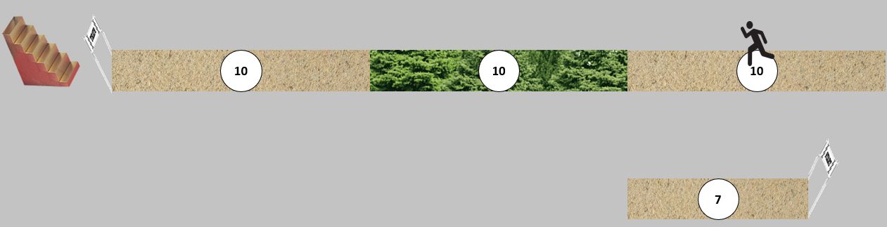

Introduction
Hi, I'm a young adult that when I was a kid, I seemingly had a remarkable vision from God about when I will die and just wanted to get this out there to get my thoughts down and maybe be an encouragement to others. If you have questions or want to reach out to me, email me at theroadto37@.com
Therefore, since we are surrounded by such a great cloud of witnesses, let us throw off everything that hinders and the sin that so easily entangles. And let us run with perseverance the race marked out for us, fixing our eyes on Jesus, the pioneer and perfecter of faith. For the joy set before him he endured the cross, scorning its shame, and sat down at the right hand of the throne of God. Consider him who endured such opposition from sinners, so that you will not grow weary and lose heart.
Hebrews 12:1-3 (NIV)
The Vision

It all started when I was 12 years old, when I went to a week long Christian summer camp. The topic for the camp was Hebrew 12:1-3, talking about running the race marked out for us. It was towards the end of the week we were praying and I had my head bowed, eyes closed, then all of a sudden, an image came to my mind which is the top half of The Road to 37 (pictured above). I could see 3 rectangles with the number 10 in the middle of them next to each other. The right and left rectangles were sand textured, and the one in between had trees like a forest (I later nicknamed this the forest years). On the left side of the three rectangles was a finish line and then golden stairs going up. There was also a moving runner in the middle of the far-right rectangle (like a GIF). Now I don't know exactly what came to mind at that time but at some point, it crossed my mind that this was my life, and this was the “race” marked out for me and the 10's represented 10 years. It also makes sense that it would be a race since I was starting middle school cross country that fall and continued that through high school. Now it was weird for me at the time that it seemed incomplete since there was no starting line, and it only had me 5 years into the race and yet I was 12 years old. A little while later, I don't remember exactly how long (maybe the same day, maybe the next), another image came to my head of a starting line and another rectangle that was sand textured and the number 7 in the middle of it (the bottom half of the image). Sometimes I wondered if I had just kind of forced that to come to mind to make it make sense, but there are reasons I will discuss later that I think otherwise. So, 7 years from the starting line to the end of the bottom box and then 5 years being half of the first box on top: 7 + 5 would be 12 and I was 12 years old at the time. I figured it was talking about my life since it was current with me being 12. So, I thought about it and figured that it may or may not be that I will die at the age of 37 and then go to heaven since there are golden stairs going up. And at some point I gave it the name The Road to 37. I also figured that the forest years, as I nicknamed them, would be the harder years of my life. This all happened as I was going into middle school and I thought about it every once in a while in middle school and high school, that I may or may not die at 37, but it didn't really impact me a whole lot since it was a long way off. Nothing really happened with it until my sophomore year of college.
Next 7 Years
As mentioned, this vision didn't impact me for the next 7 years, but there is something of note that happened when I was 17 that should be shared: During my junior year of high school, my birthday was on a Wednesday that year (which interestingly has other patterns), and I was turning 17. Now the Friday before my birthday a friend's dad passed away and it was just all of a sudden. He was in his 50's and went hunting then had a heart attack. However, everyone knew that he was a believer and that he was in heaven, so that made it somewhat easier. Around that same time, I don't remember exactly when, but my uncle wasn't doing very well and went into hospice. Now it wasn't a very good birthday since all of this was happening. Then the Friday after my birthday was my friend's dad's funeral, so I went to that and it was a sad but good funeral. After the funeral my family went to where my uncle was, since he took a turn for the worse. That evening my uncle passed away and I was in the room when he did. We aren't sure, but we don't think that he was a believer and so that was harder. That night was a little hard just with so much death in one day. I just started thinking about what if I died today. I knew I was a believer and that I would go to heaven, but I was just thinking about it. It was interesting too that one of them was a believer and one wasn't, and just that contrast. I talked with my parents about it and they helped me process it. After a couple days I think I had done most of the processing and moved on from it.
Connections
I wanted to share that story since it is a key milestone with The Road. It was winter break of my sophomore year in college when I decided that I would start journaling about things in my past onto my computer. As I was typing out the story above in my journal, something hit me. I made the connection this happened when I was turning 17 which is exactly the start of the forest years on The Road. As in, The Road had predicted something difficult coming in the future and it came true. As soon as I thought of that, I started freaking out, since I realized that this gives more of inclination that The Road might actually be true. Before that I had kind of been maybe, but probably not, but this seemed to confirm it. I started freaking out so much that it seemed like it was getting harder to breathe. I started to pray frantically “Lord, please give me a clear answer whether this is true or not.” I said that probably 3-4 times, then all of a sudden, I felt this peace come over me that was indescribable. It reminds me of Philippians 4:7 with the "peace that surpasses understanding". I felt wonderful and I actually started crying tears of joy just because I could feel God's presence around me. Then I remember thanking God then saying something like “Lord, I don't care if I know the answer, I just want to be with you.” I climbed into bed feeling at peace knowing that God was with me, no matter when I die. I don't know exactly why God chose to reveal that it was a part of The Road to me 3 years after it happened, but I do know that he had a purpose for that.
Mission Trip
I kind of wish I had told someone about that experience shortly after, but I didn't. I just went on with life as normal, but The Road came to mind more frequently, but I still didn't know fully if it was true or not. I started drawing it out and making digital versions of it just to help remind me. It did get me thinking about what I could be doing to make the most of my life if I'm only going to be living until 37. The following summer I went on a mission trip to Asia and one of the values with the organization I went with is initiative and I realized just how much I need to improve on that. The Road came up with that a little bit just because I want to make the most of my life, but if I live a shorter amount of time then I have less time to do things, so I should take the initiative to do spiritual things for the kingdom. I went on the trip and it was a good learning experience for me to see how God works in a different part of the world and how I got to be a small influence in some people lives to point them towards Christ. I don't know how much of an impact I made, but I know God's in control just like He's in control with my life and The Road. It also helped me with practicing sharing with people and taking the initiative to reach out. Towards the end of the trip I remember praying that God would give me a clear answer whether going overseas long-term was something He eventually wanted me to do. Shortly after I was done praying, The Road came to mind. At first, I thought that it came to mind like it sometimes did randomly, but then I realized that it was a weird time for it to come up shortly after my prayer. So, I started thinking about it, and figured there must be a reason that God brought it to mind right after praying. After a little bit of thinking I was questioning why the starting line and the 7 came later and was separate. Then it hit me, I had been born and spent 7 years in a different Asian country, so it makes sense why the starting line would be separate. On the trip, it was also a common question if I had been out of America before. So, it was top of the mind telling people that I had spent 7 years in another country, which I don't do as much with Americans. I took it a step further then and made the assumption that since all of the rest of The Road is together that God was saying in a very indirect way that he doesn't want me to do long-term missions since none of the rest of The Road is separate. I don't know if that is true or not, but I do think it is ironic that The Road came to mind right after praying and that God knew that my first 7 years would be on the top of my mind and I would question why The Road came to mind and He knew that I would come up with the conclusions that I did come up with. I don't know why He led me that way, and it could be because it's true, but it could also be just for me to not know whether it's true or not and trust Him through it all. Something else to note was that this time I didn't freak out when I figured out that detail, I think it's because a) I was outside prayer walking and would have looked weird freaking out outside in a foreign country, and b) I think God had given me more peace about The Road and is currently helping me to trust Him more with it.
End of the Forest Years
Life went on pretty much the same, and my friends never did check in to see how that was going (which I probably didn't have anything to say anyway). To be honest, I was still having some skepticism about it, but the things kept piling up, and even some smaller things not mentioned here. Also I had several times where I would have a random thought about something completely unrelated to anything, only to have it come up in conversation later that day. I even had a dream where I learned a new fact, and that exact same fact came up in class that day. It happened often enough that I felt like God was telling me that He was there and looking out for me. I graduated college and got my first job, and things were good. I did move to a new city for the job, but it was still relatively close to my parents, and didn't feel like a major transition. As the end of the forest years continued to come closer and closer, I was wondering what might be in store for me when I was 27. I had the thought when I was on the mission trip that if something major happened at 7 and 17, then as The Road predicts, something major should happen at 27. For a while I figured that the best explanation was if I got married at 27. But as I grew older and closer with no prospects (still growing in initiative), I began to wonder if maybe it was something else that God had in store for me. And marriage with this in the back of my mind in another topic in itself. I want to get married, but with only so many years left, then would it still be worth it, and then kids is a whole other topic. So when I turned 27, nothing really changed right away, but I figured it might be sometime that year. A couple months after my birthday one of my roommates said he was looking to buy a house and move out at the end of the lease, which then prompted me to consider buying a house. I had saved enough and with the rent increasing with less people, it made sense financially. I started looking and did buy a house, and one of my other roommates came with me. It was a major decision to buy a house, so it seemed like I had transitioned from the forest years back to sand after moving into the house, and having a slight change of pace and habits. I was worried that I might have created a self-fulfilling prophecy by buying the house, but I can see God was working through the process. So, overall, there were challenges in the forest years, but God helped lead me through them back onto sand.
Conclusion
Throughout my whole life I have seen God at work in my life through The Road to 37, and I know that He isn't done with me yet. Whether or not The Road is true or not is only known by Him, but it seems to indicate with everything here that it is. It has helped me trust Him more through all of this, and I have wondered how different I would be if God hadn't shown this image to me. When I struggle with it sometimes, I keep going back to the time when God showed his peace to me when I was freaking out, and know that He is with me no matter what. I know that God showed this to me and had me hang on to it for all these years for a purpose, even if it isn't true. I might never know what the true purpose of the vision is on this side of heaven, but I will one day. Until then, I'll just have to rely on God and trust Him that what he has planned for me is good (Joshua 29:11), and I'll keep running with perseverance the race marked out for me, fixing my eyes on Jesus, the pioneer and perfecter of faith (Hebrews 12:1-2).